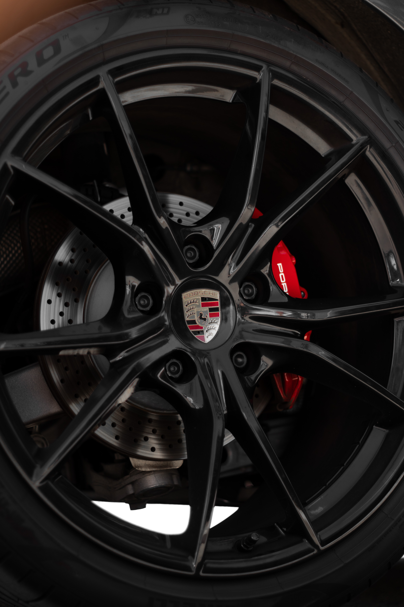
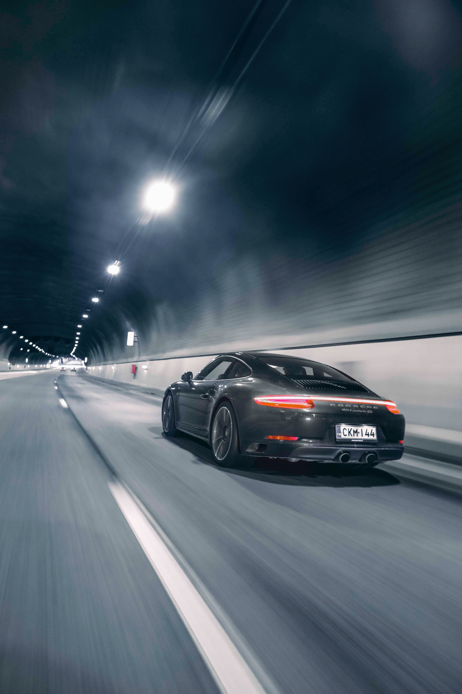
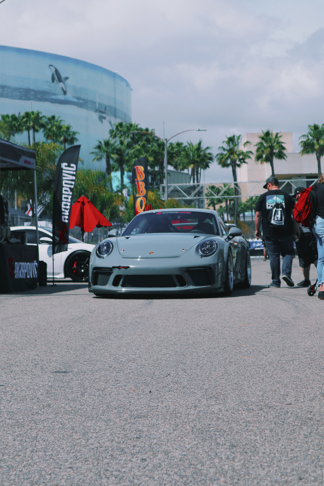

Rodas Carreira
O 911 Carrera T está equipado com rodas Carrera S de 20/21 polegadas com design de 10 raios, pintadas em cinza titanio(brilhante). O material:metal leve, obiviamente.As rodas e pneus no eixo traseiro...

Suspenção
Com a suspenção ativa PASM Sport, a carroceria pode ser rebaixada em mais 10 mm. As molas são mais duras e curtas, os establizadores tranversais no eixo dianteiro e traseiro tem maior resistencia...

Design Exterior
O carater desportivo é reaçado pelos retrovisores externos, frisos decorativos, grande da tampa traseira e a inscrição "PORSCHE" nas portas na cor de detaque Cinza Agata. As duas variantes da incrição traseira tambem ...

Escape Esportivo
O sistema de escape esportivo garente uma ressonancia impressionante e um som esportivo intenso, como é tipico para a Porsche. Ele possui um silenciador central que, termina em saidas de ecapes pretas ...